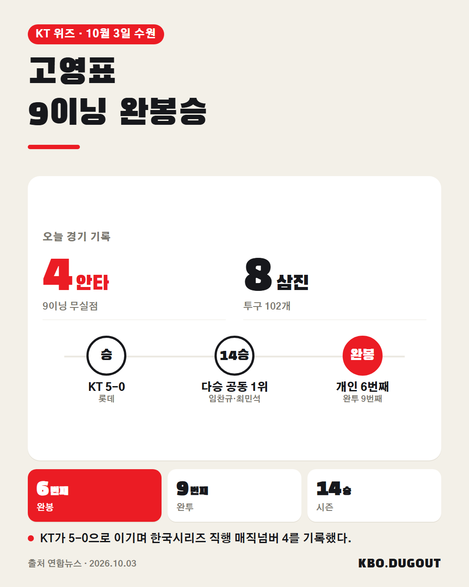

고영표가 시즌 9번째 완투, 개인 통산 6번째 완봉승으로 롯데전 5-0 승리를 이끌었습니다. kt는 한국시리즈 직행 매직넘버를 4로 줄였습니다.
QA AI 검수 실패
고영표가 시즌 9번째 완투, 개인 통산 6번째 완봉승으로 롯데전 5-0 승리를 이끌었습니다. kt는 한국시리즈 직행 매직넘버를 4로 줄였습니다.
QA AI 검수 실패

고영표가 롯데전에서 9이닝 4안타 무실점으로 완봉승을 거두며 개인 통산 9번째 완투이자 6번째 완봉을 기록했다. 시즌 14승째로 다승 공동 선두에 올랐고, kt는 5-0 승리로 한국시리즈 직행 매직넘버 4를 기록했다. #KBO #프로야구 #야구 #고영표 #KT위즈
QA 출처와 사실이 다를 수 있음